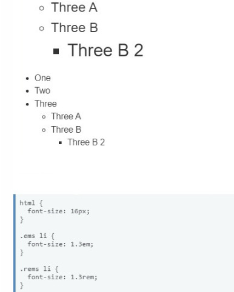
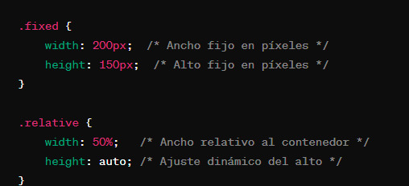
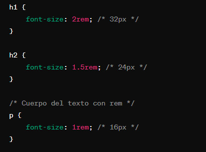
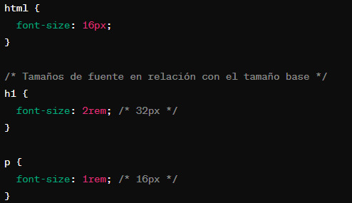

Algunas de las propiedades de unidad de medida son las siguientes:
La unidad de medida utilizada aquí es rem. la unidad rem significa el tamaño de letra del elemento raíz.

El REM Permite un mejor control de escalabilidad. Para contenedores y dimensiones, usar % o em proporciona mayor flexibilidad en diseño,
Las unidades absolutas como px son útiles cuando se busca consistencia en dimensiones fijas.
Esta unidad relativa es muy famosa en el mundo CSS. Difícilmente encontrarás algún navegador que no admita esta medida,
que ha estado presente desde el principio. Este es definitivamente uno de los puntos que hacen que el em sea muy popular. El segundo punto es
sin duda, la facilidad para crear layouts fluidos y responsivos. Esta unidad cambia a los elementos hijos de acuerdo con el tamaño de
fuente (font-size) del elemento padre.
La unidad de medida utilizada aquí es px, que representa píxeles. Esta unidad se utiliza para especificar el espacio de
relleno alrededor del contenido de un elemento.
son propiedades que definen el ancho y el alto de un elemento, respectivamente.
Estas propiedades son esenciales para controlar el tamaño y la disposición de los elementos en una página web.

Cuando defines tamaños de fuente en CSS, es recomendable utilizar unidades como "rem" o "em".
Estas unidades se basan en el tamaño de fuente del elemento raíz (como el elemento html), lo que facilita mantener un diseño tipográfico consistente y escalable en todo el sitio web.
Por otro lado, si prefieres reducir el efecto de cascada de las unidades relativas,
puedes aplicar el tamaño de fuente a los elementos secundarios más específicos posible.
De esta manera, tienes un mayor control sobre el estilo de las partes del documento sin afectar significativamente la estructura general.
A continuación se muestra un ejemplo de uso remde tamaños de fuente:
HTML:

CSS:

En este ejemplo, el "font-size" valor del "html" elemento se establece en 16px. La clase "component" tienen "font-size" con valores relativos a la
clase "component". El uso de "rem" o "em" para tamaños de fuente garantiza que su tipografía se adapte bien a diferentes tamaños de pantalla y brinde
una experiencia de usuario consistente